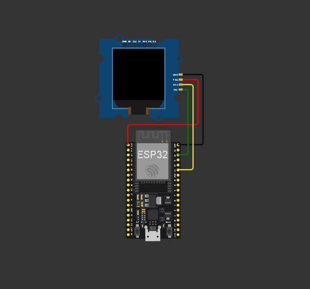
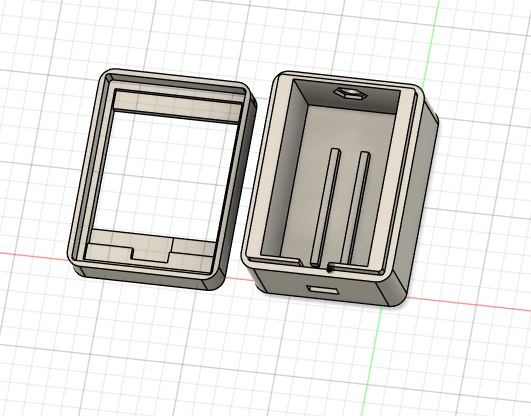
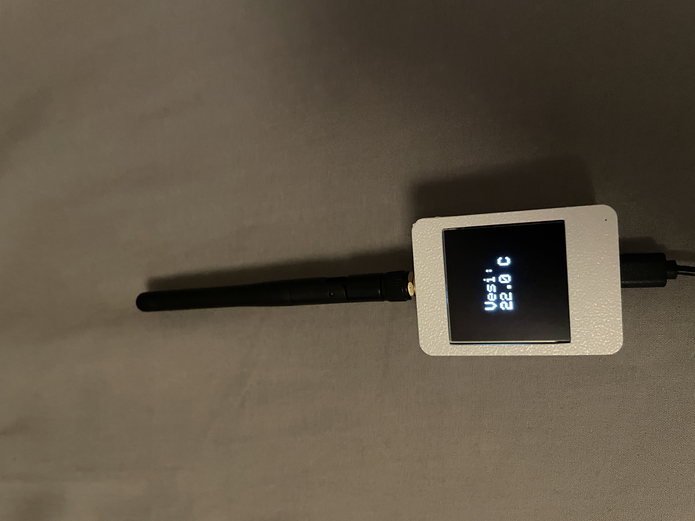
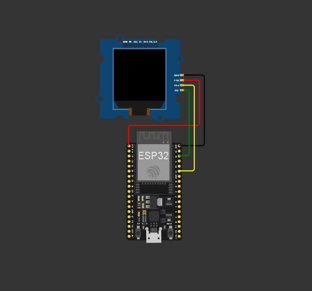
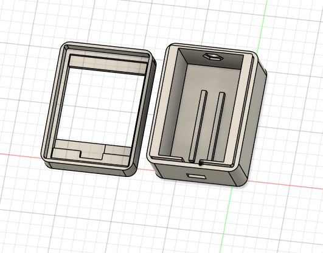
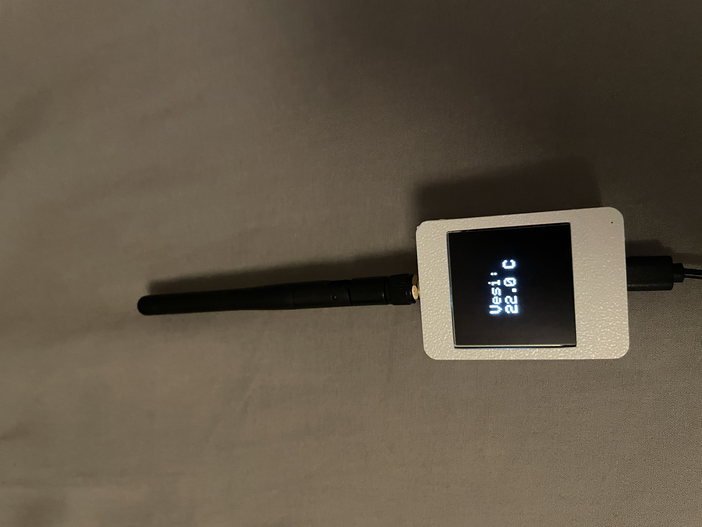

Mittari v1.0
ESP lähettävä lämpötila mittari – lokakuu 2025
Projektin kuvaus
Koodit:
Tavoitteet
Saada ESP32 lähettämään lämpötila anturilta toiselle ESP32:lle käyttäen ESP NOW-yhteyttä, jonka jälkeen vastaanottaja tulostaa lämpötila näytölle. Halusin lähettimeen myös napin, jolla lähetys voidaan käynnistää ja pysäyttää. Halusin myös ledin, joka syttyy kun dataa lähetetään.
Käytetyt komponentit
- 2x ESP32 WROOM 32U
- 2x WIFI/GSM antenni 2.4G
- 1x DS18B20 lämpötila-anturi
- 1x 330 Ohm vastus LED-valoon
- 1x 4,7k Ohm vastus lämpöanturiin
- 1x Nappi
- 1x LED
- 1x 128x128 OLED
Haasteet
- Käytössä ei ollut verkkoyhteyttä, joten ESP NOW oli ainoa vaihtoehto.
- Yhteyden riittäminen noin 100m matkan metsikön läpi oli haastavaa.
- Kotelon suunnittelu niin, että siitä saisi vesitiiviin.
Opitut asiat
- Anturi tiedon lukeminen ja käsittely.
- ESP NOW yhteyden luominen ja datan lähetys.
- Mac-osoitteiden käsittely.
- OLED-näytön käyttö.